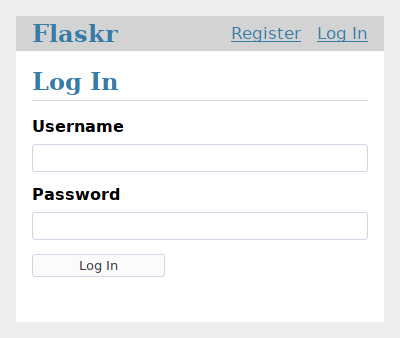

Tutorial¶
Contents:
This tutorial will walk you through creating a basic blog application called Flaskr. Users will be able to register, log in, create posts, and edit or delete their own posts. You will be able to package and install the application on other computers.

It’s assumed that you’re already familiar with Python. The official tutorial in the Python docs is a great way to learn or review first.
While it’s designed to give a good starting point, the tutorial doesn’t cover all of Flask’s features. Check out the Quickstart for an overview of what Flask can do, then dive into the docs to find out more. The tutorial only uses what’s provided by Flask and Python. In another project, you might decide to use Extensions or other libraries to make some tasks simpler.
Flask is flexible. It doesn’t require you to use any particular project or code layout. However, when first starting, it’s helpful to use a more structured approach. This means that the tutorial will require a bit of boilerplate up front, but it’s done to avoid many common pitfalls that new developers encounter, and it creates a project that’s easy to expand on. Once you become more comfortable with Flask, you can step out of this structure and take full advantage of Flask’s flexibility.

The tutorial project is available as an example in the Flask repository, if you want to compare your project with the final product as you follow the tutorial.
Continue to Project Layout.